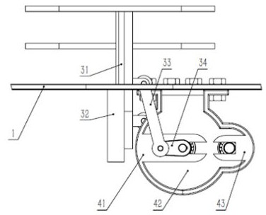

Invention Patents
Two things I sketched out of pure curiosity, then made real
When I'm not coding or drawing, I tinker with physical things. Both patents started as rough sketches in a notebook — a scooter that rides smoother, and a boat that cleans rivers on its own.

A Scooter
App. No. 202210710034.4
Substantive Examination · Mar 2024
Reworked the scooter's structure and components for a more stable, comfortable ride.

Water Surface Floating Object Collection Boat
App. No. 202610098475.1
Filed · Jan 2026
A boat that scoops floating debris off the water on its own — cleaner rivers, less manual labor.
Why invent? Because the best way to understand how something works is to try and build it better.